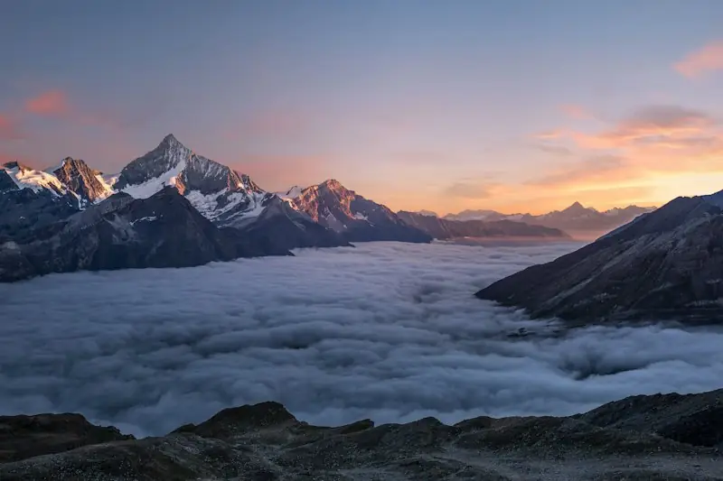
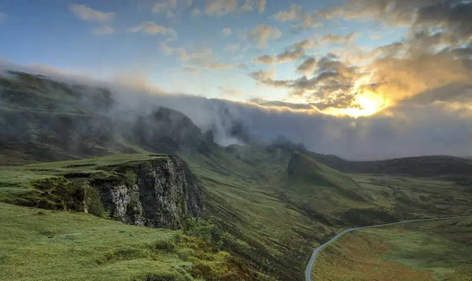
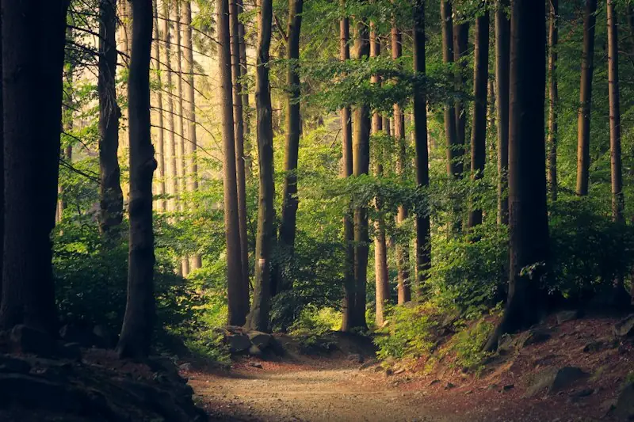
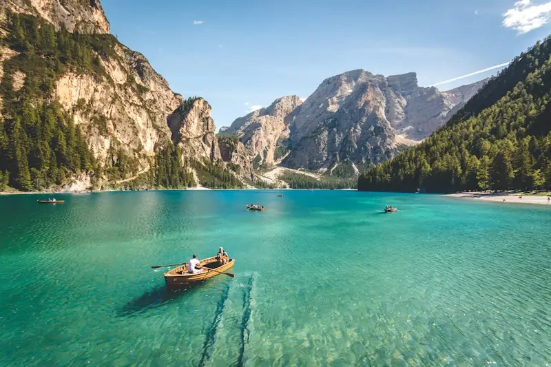
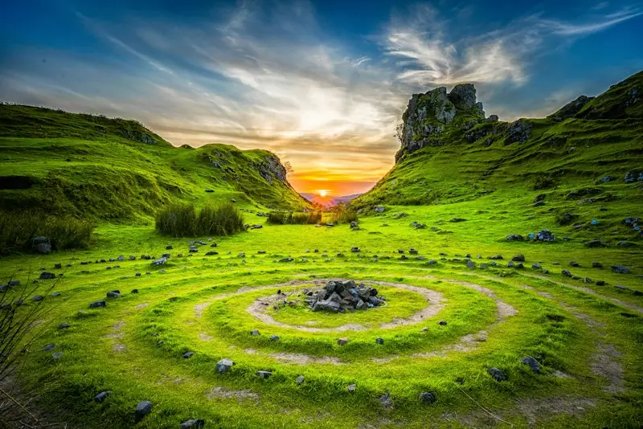
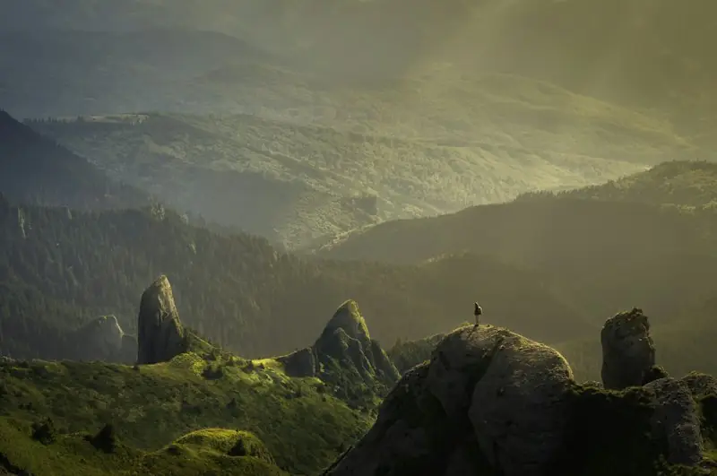

Горы
Кавказ, Алтай, Урал — самые живописные вершины страны.
Эта страница создана специально для практического занятия. Здесь есть тяжёлые изображения, блокирующие скрипты и большой CSS-файл — всё то, что замедляет загрузку. Задача — найти узкие места и оптимизировать их.
После внесения правок страница должна загружаться быстрее, а метрики LCP, CLS, TBT и Speed Index — улучшиться.

Кавказ, Алтай, Урал — самые живописные вершины страны.

Тайга занимает большую часть территории России.

Пешие маршруты для любителей спокойного отдыха.

Байкал, Ладога, Селигер — чистая вода и тишина.

Летние вечера вдали от города.

Бескрайние просторы средней полосы.